EBiM-Lite 是 EBiM（具身雙臂操作）Benchmark 的雙 SO-101 版本。它改編完整版的三個賽道，並改用開源低成本硬體，讓更多大學團隊能參加。隊伍先在模擬中學習，表現最好的策略再經跨站驗證，最後在真實機器人上評測。
不可遙控操作，只評全自主運作。
每個賽道各自排名。
由 Isaac Sim 初選決定誰晉級實機評測。
| EBiM 2026（完整版） | EBiM-Lite 2026 | |
|---|---|---|
| 機器人 | Mobile FR3 Duo | TurtleBot 4 + 2 × SO-ARM101（六軸） |
| 參賽對象 | 全球開放 | 台灣的大學與產業學習者 |
| 模擬 | Isaac Sim / MuJoCo / Genesis | Isaac Sim / Isaac Lab |
| 驗證站 | 漢堡、慕尼黑、上海 | 台北／桃園、台南／高雄、新竹（待確認） |
| 決賽 | 於合作實驗室進行實機驗證 | 2027 年 5 月中 GTC Taipei 實機決賽 |
| 場地 | 150 cm 走道 | 100 cm 走道、Moxboda 圓桌（高 30 cm、直徑 70 cm） |
| Track 1 | 線纜佈線與插接，限時 30 分鐘 | 於縮小的 20 × 20 cm 板上佈線，限時 60 分鐘 |
| Track 2 | 導熱墊放置，P × O × IoU | 相同計分；候選目標只有 3 條記憶體模組 |
| Track 3 | 輔助生活與餵食：含餵食共 4 階段，滿分 16 分 | 服務機器人挑戰：3 階段（無餵食），滿分 10 分 |
| 指標 | 結果（排名）+ 過程 + 安全門檻 | 主要指標 + 同分比較；過程與安全指標待公布 |
| 隊伍資源 | 合作夥伴提供的算力補助 | DLI 課程、Brev 額度、GPU 時數、DGX Spark/RTX 出借，入選隊伍提供機器人 |
在 Isaac Lab 以確定性模擬任務線上競賽。
約 10 支入選隊伍取得硬體，在台灣各驗證站進行線下預賽。
線纜佈線、導熱墊取放與長程服務流程。
每個賽道有主要指標與同分比較（見下方賽道任務）。
即將公布 若有過程與安全指標，將於規則手冊公布。
Isaac Sim 與實機使用相同任務與計分規則。
TurtleBot 4 搭載兩支 SO-ARM101。
模擬與實機成績都會列在排行榜上。
決賽後發表 Benchmark 報告。
工業情境：路徑辨識 → 線纜抓取 → 佈線 → 固定，於 20 cm × 20 cm 的板上進行。
假設板上有 10 個夾具：第 1–6 個正確，第 7 個錯誤，之後第 8–10 個雖然正確。
Prefix = 6 → 完成率 = 6 ÷ 10 = 60%，第 8–10 個不計分。
僅為示意範例，正式細節以規則手冊為準。
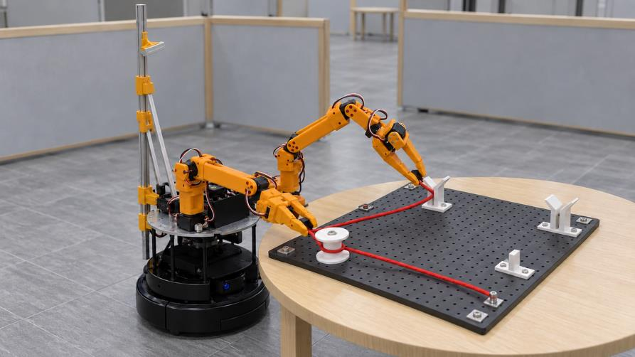
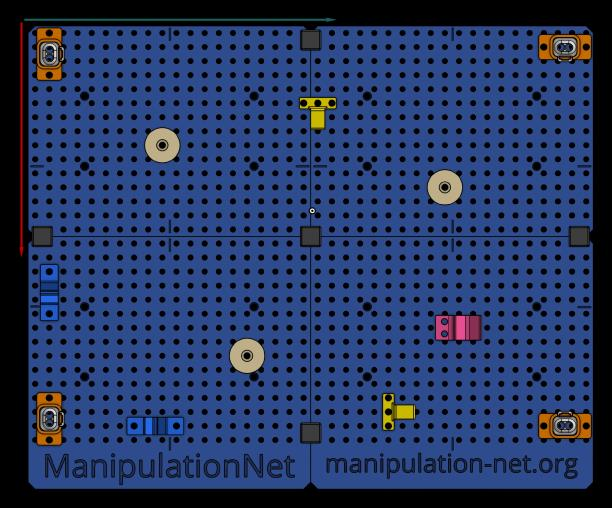
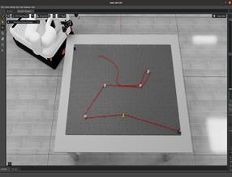
工業電子製造情境：導熱介面材料（TIM）組裝 Benchmark。
| P | O | IoU | 分數 |
|---|---|---|---|
| ✓ 夾取成功 | ✓ 方向正確 | 0.85 | 0.85 |
| ✓ 夾取成功 | ✗ 方向錯誤 | 0.90 | 0 |
| ✗ 夾取失敗 | — | — | 0 |
若兩隊 P × O × IoU 同分，先比原始 IoU，再比完成時間。
僅為示意範例，正式細節以規則手冊為準。
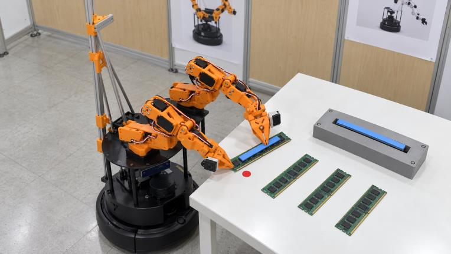
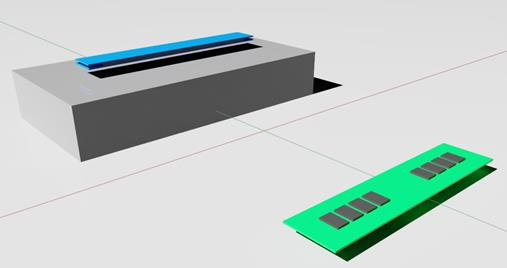
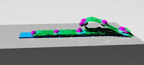
完整服務流程：布置餐桌 → 回收咖啡豆 → 清理，橫跨廚房區、用餐區與垃圾回收區。物品：杯子、一碗咖啡豆、湯匙。
| 階段 | 結果 | 得分 |
|---|---|---|
| 1 · 布置餐桌 | 所有物品都到達目標 | 3 |
| 2 · 回收咖啡豆 | 回收 90% 的咖啡豆重量 | 4 × 90% = 3.6 |
| 3 · 清理 | 3 件中有 2 件放進水槽區域 | 2 |
| 總分 | 8.6 / 10 | |
排名時先比完成的最高階段，再比總分，最後比完成時間。
僅為示意範例，正式細節以規則手冊為準。
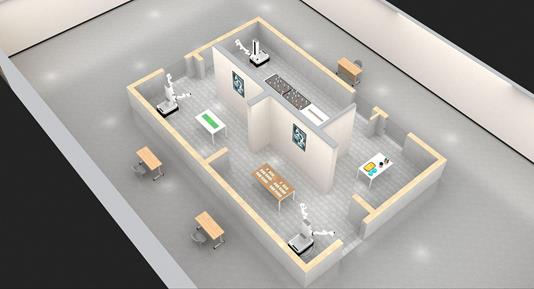
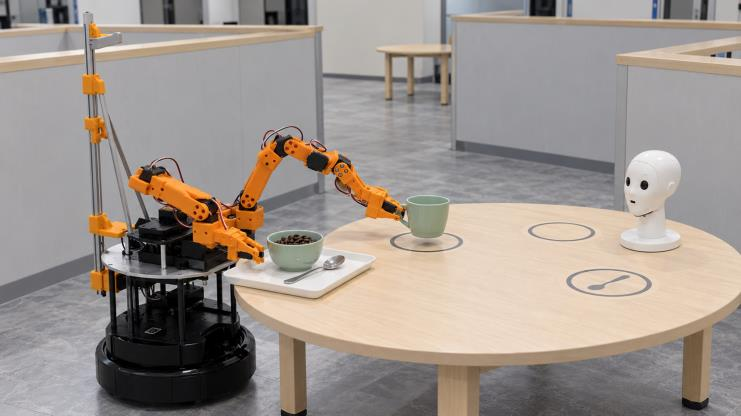
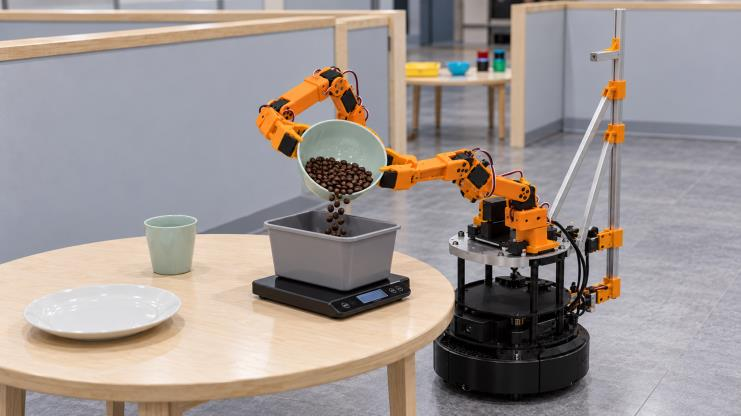
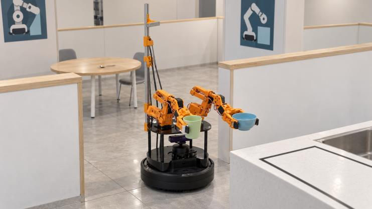
TurtleBot 4 搭載兩支 SO-ARM101。開源軟硬體降低大學團隊的參賽門檻，精簡的體積也適合 EBiM-Lite 場地的 100 cm 走道與 30 cm 桌面。
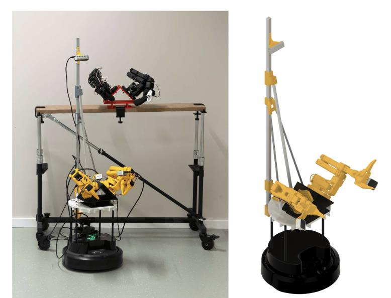
每張桌子改為 Moxboda 圓桌，高 30 cm、直徑 70 cm。
所有走道由 150 cm 縮小為 100 cm。
機器人改為低成本的雙 SO-101 平台。
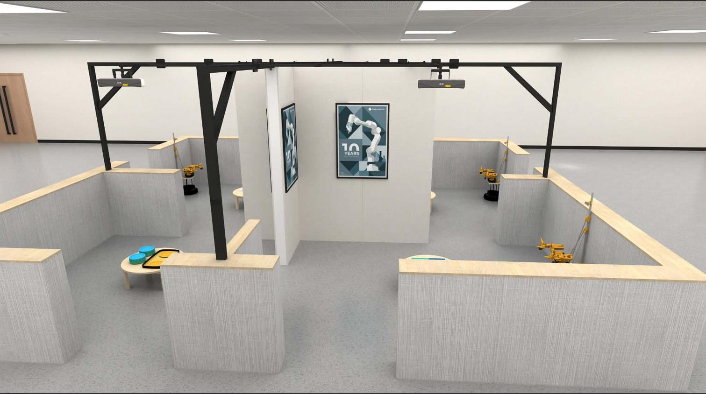
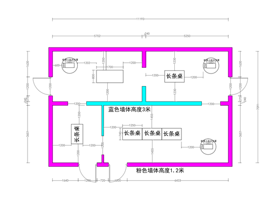
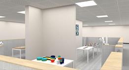
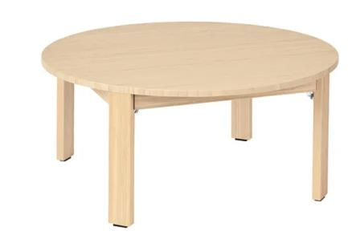
各站的場地、負責人與開放時間將另行公布。
場地待公布
待確認
場地待公布
每隊人數、報名費、隊名規則，以及一隊可報名幾個賽道，將於規則手冊公布。
| 項目 | 日期 |
|---|---|
| 正式公告 | 2026/11/20 |
| 報名截止 | 2026/12/21 |
| Stage I 模擬賽（算力 Phase I/II） | 2026/12 – 2027/03 |
| 模擬初選 | 2027/02/25 – 03/25 |
| Stage II 入選隊伍（算力 Phase III） | 2027/03 – 05 |
| 實機決賽 @ GTC Taipei | 2027 年 5 月中 |
Isaac Lab 任務環境、機器人素材、文件與 baseline 程式將於 GitHub 釋出。
模擬初選的提交格式、封裝要求與規則，將於 2027/02/25 前公布。